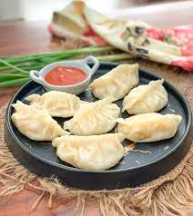
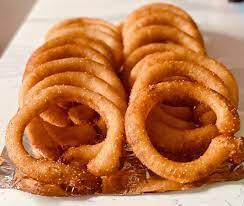
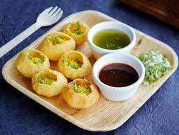
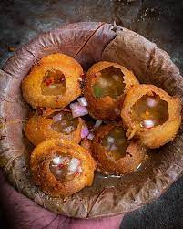

.jpg)
5 POPULAR DISH IN NEPAL
1.MoMo
Momo are traditionally steamed but can also be eat in many form like deep fries,pan fried,chilly momo and many other. Momo is said to be originate in tibet Momo usually served with chilli garlic sauce But In Nepal, Most of the people love dipping sauces that include tomato-based chutneys or sesame or peanut or soybean-based sauces called Jhol achar.Nowadays, it is famous in other countries like India and other asian countries.
2.Selroti
Sel roti is made from a rice flour,Millet,buckwheat, sugar, ghee, which is then deep fried in cooking oil.It is mainly made in festivals Like Dashain,Tihar.On the days of festivals.Its the snacks for most of the nepalese
3.Chowmein
.jpg)
Noodles popularly known as 'Chowmein' in nepal is very popular snacks for nepalese.It is pan fried eith lots of vegetables and protein with suitable sauce or chutney.
4.Dal Bhat Tarkari
.jpg)
Nepalese dal bhat is made of white rice (Bhat) and lentils (Dal), and it is usually served with vegetable curry (Tarkari), a variety of spicy vegetables (Tarkari) greens (Sak/sag). It is enjoyed with papad in a large metal tray with spicy chutneys(pickles).It is day to day lunch of we nepaslese.
5.Panipuri/Fulki
 